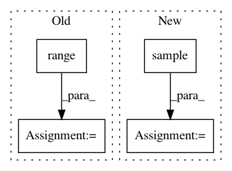

eaaf2bad32af4bda1a98d434530926bb6a001230,textacy/augmentation/transformations.py,,insert_synonyms,#Any#Any#Any#,97
Before Change
Returns:
List[Item]
for _ in range(n):
text_pos, syns = random.choice(list(synonyms.items()))
// FIXME: we should skip empty syns, if others are available...
if not syns:
continue
pos = text_pos[1]
random_syn = random.choice(syns)
random_idx = random.randint(0, len(items) - 1)
ws = items[random_idx].ws
// insert synonym into the list
items.insert(
random_idx,
Item(tok=None, text=random_syn, ws=ws, pos=pos, is_word=True),
)
// we almost always want whitespace between this and the previous item
// so fix it if we have to
if random_idx > 0:
prev_item = items[random_idx - 1]
if not prev_item.ws:
items[random_idx - 1] = Item(
tok=prev_item.tok,
text=prev_item.text,
ws=" ",
pos=prev_item.pos,
is_word=True,
)
return items
def swap_items(items, n):
After Change
Returns:
List[Item]
random_synonyms = random.sample(synonyms.items(), min(n, len(synonyms)))
if not random_synonyms or len(items) < 3:
return items
for (_, pos), syns in random_synonyms:
In pattern: SUPERPATTERN
Frequency: 5
Non-data size: 4
Instances
Project Name: chartbeat-labs/textacy
Commit Name: eaaf2bad32af4bda1a98d434530926bb6a001230
Time: 2019-08-23
Author: burtdewilde@gmail.com
File Name: textacy/augmentation/transformations.py
Class Name:
Method Name: insert_synonyms
Project Name: HyperGAN/HyperGAN
Commit Name: 345fce3d67cafe3a1728b177d376193f48efd4bd
Time: 2020-02-17
Author: mikkel@255bits.com
File Name: hypergan/samplers/batch_walk_sampler.py
Class Name: BatchWalkSampler
Method Name: __init__
Project Name: chainer/chainerrl
Commit Name: 9801f28774b8d4aeed7d65025bf2451814c1db6d
Time: 2019-03-26
Author: prabhat.nagarajan@gmail.com
File Name: chainerrl/agents/ddpg.py
Class Name: DDPG
Method Name: batch_act
Project Name: uber/pyro
Commit Name: 2a8c7d1976fc74ff9f1075af31f4b9d0482bee53
Time: 2020-05-15
Author: fehiepsi@gmail.com
File Name: tests/ops/test_welford.py
Class Name:
Method Name: test_welford_dense
Project Name: Microsoft/nni
Commit Name: 28999d440572b5c18156599df0af46a4bd86d2ec
Time: 2019-06-25
Author: xuehui@microsoft.com
File Name: src/sdk/pynni/nni/metis_tuner/Regression_GMM/Selection.py
Class Name:
Method Name: selection_r